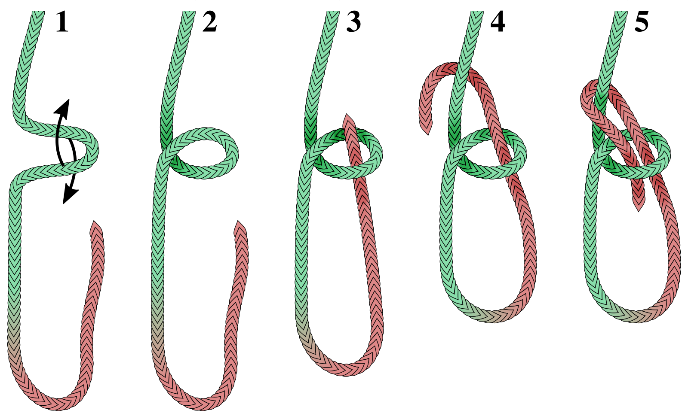
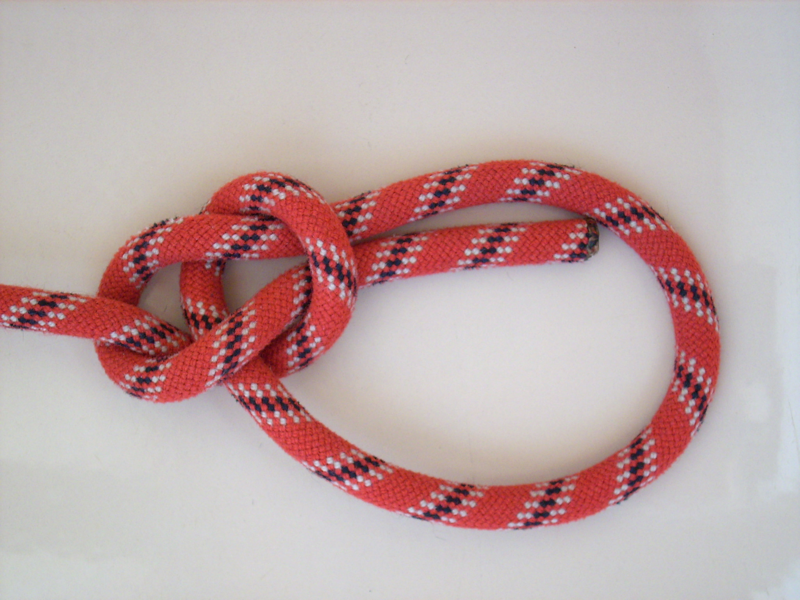

もやい結び：特徴と結び方
もやい結びの特徴と用途
ロープの端に、固定した大きさの輪を作る結びです。荷重を抜けば、比較的ほどきやすいのが特徴です。
物に輪を掛けてロープを取り付ける、といった使い方があります。
図は上が立端（元へ続く長い側）、赤が動端（動かす先端）です。同じ向きで、左から右へ追います。

- 図1 輪に使う長さを残します。
- 図2 小さな輪を作り、左手で交差を保ちます。
- 図3 右手の動端を、小さな輪の裏から表へ通します。
- 図4 動端を、上へ続く立端の後ろへ回します。
- 図5 同じ小さな輪へ、今度は表から裏へ戻します。
形を整えて、締める
ねじれを直し、大きな輪と元側を持って、少しずつたるみを寄せます。先端は大きな輪の内側に残します。

ほどくとき
荷重を完全になくし、立端を回る部分を曲げ戻して緩め、動端を逆順に抜きます。